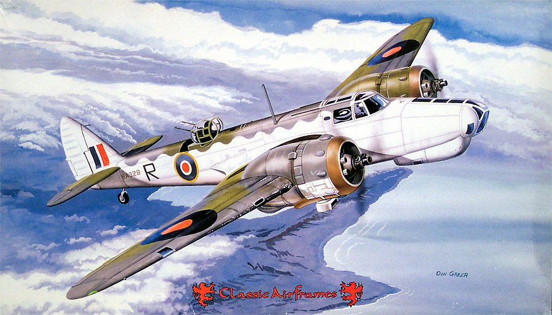
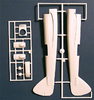
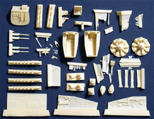
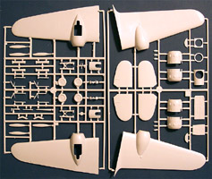
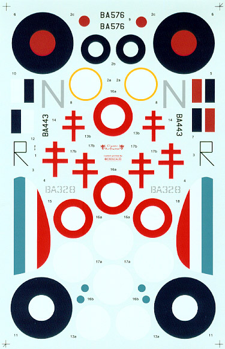

|

Classic Airframes 1/48 Bristol Blenheim Mk V

Kit #437 Collector's Market Value approximately $102.00
Images and text Copyright © 2004 by Matt Swan
Developmental Background
The Blenheim was originally built in England in 1934 as one of the first executive planes for the proprietor of the Daily Mail, Lord Rothermere, who wanted a fast plane capable of carrying six passengers, a pilot and a co-pilot. Equipped with two Bristol Mercury engines, the Bristol Type 142, as it was then called, was 30 mph faster than the RAF's new biplane fighter, the Gloster Gauntlet. Bristol designed a military version of their new aircraft, the Type 142M, which the Air Ministry ordered 150 of in the summer of 1935, and a second order for 434 more in July of 1937. The Type 142M, or Blenheim I, as it was now called, had a bomb aimer's station in the nose, an internal bomb bay, and a dorsal machine gun turret for self-defense.
The aircraft saw several minor modifications in power-plant, electronics and defensive armament resulting in the Type 149 which would enter production in the UK as the Blenheim Mk IV. By 1939, most Blenheim 1s had been replaced in Britain by the new Mk IV. The Mk Is continued to serve as trainers and a number were converted into night fighters. Various attempts were made to improve the defensive armament of the Blenheim Mk IV. Twin guns were installed in the dorsal turret and various rearward firing installations were fitted below the nose to cover the blind spot.
The next version of the Blenheim to enter service was the Type 160D which became the unloved Mk V. By the time the Blenheim Mk V entered service in mid 1942 it was hopelessly underpowered and outclassed compared to its adversaries in the Mediterranean and Far East theaters. Designed to meet specification B.6/40 for a close support bomber the Mk V had a solid nose housing four .303 machine guns with 1000 rounds of ammunition each. A new larger and more effective BX dorsal turret was installed mounting twin machine guns. Other changes saw the installation of paired doors to replace the large aprons fitted to the undercarriage legs of earlier marks. In all other respects the new aircraft resembled the Mk IV. Two prototypes were built and production was to be undertaken by the Rootes factory. The machine gun solid nose section was replaced in favor of a glazed bomb aimer's position when the role requirement was changed to that of medium level bomber. A blister with a rear facing pair of machine guns was situated under the starboard section of the nose; the front portion of this blister formed the foot-well for the navigator. Despite retaining the power-plants of its predecessor, the "new" Blenheim gained 17 percent in gross weight. This meant it was an extremely slow aircraft even so, 940 Blenheim Vs were built and saw front-line service with 10 Squadrons. This model of the Blenheim was nicknamed the Bisley in reference to the home of the National Rifle Association in the UK. Its service record and high attrition reflected its outdated design and poor performance and after serious losses in Italy, it was withdrawn from service.
No 139 Squadron Bomber Command was the first to receive the new aircraft at Horsham in June 1942. Before they could use them operationally their Mk Vs were hastily withdrawn and replaced by de Havilland Mosquitoes. It was now blatantly apparent that the Blenheim was too slow and under armed for the European theater of war. No Mk V Blenheims exist today and only a single Blenheim IVT, actually a RCAF Bolingbroke, remains airworthy. It is owned and operated by the Aircraft Restoration Company at Duxford, UK, and has been flying since May 1993.
The Kit
I've built a few Classic Airframes kits and generally speaking, they make some interesting and somewhat exotic kits. I think one of the greatest issues I've had with the CA kits is the poor fit of the resin cockpits into the fuselage. With every kit I've built in the past the inner walls of the injection-molded fuselage had to be sanded to nearly paper thinness before the pit would fit. This problem seems to have been resolved on this kit.
The nose of this model comes as a set of two large clear parts that the resin interior pieces fit into and then this assembly plugs into the main fuselage. These six clear injection molded pieces show good clarity and crisp frame lines and are all focused on the nose section, there are no clear navigation lights provided. A small sheet of clear vacuformed pieces to encase the directional antenna supplements them. The other kit plastic pieces are standard Classic Airframes low-pressure injection molded gray polystyrene with nice engraved panel lines and slightly heavy mold separation lines. Flash is minimal and there is no evidence of any sink marks but we do have some large injector pins inside the wings and fuselage. The injector pins inside the wing halves must be shaved off prior to construction, the fuselage pins should present no problem as they are. The large parts, I'm talking wing panels and fuselage here, do show some slight warpage but nothing that can't be pulled out during the assembly process with a few clamps and rubber bands. Other than the slight warpage, the wing panels and fuselage pieces seem to fit together well and everything looks like it will line up okay. Overall we have 68 gray injection molded pieces on four trees.
The kit includes 83 pale-cream resin parts packaged in several small plastic bags. This is where all the cool detail for the interior areas comes into play. The side walls for the nose compartment along with the front bulkhead show great panel lines, landing gear bays and engine faces are equally well detailed and so are the machine guns. Something that caught my attention was the beautifully done Hedgehog exhaust manifold. During the initial inspection of the resin parts I could find no sign of micro bubbles, warpage or excess flash. Total contents of the box are 161 pieces in various substrates.



You may click on the above images to view larger pictures
Decals and Instructions
Classic Airframes gives us a good amount of literature with the model. This begins with an eight-page assembly booklet. Here we have a page devoted to the historical background of the aircraft with specifications. Following this is a comprehensive parts maps and general paint reference guide.

Paint colors are identified by name and in a few instances by Federal Standard numbers. The next six pages consist of twenty-one exploded view construction steps that feature color call-outs and construction notes. Besides the assembly booklet we also have a full color page illustrating two of the three marking options and decal placement for the kit. There is a half-page in black and white for the third marking option and a supplement sheet for the Free French markings.
As I mentioned just a moment ago, this kit provides marking for three different aircraft. We have markings for a Free French aircraft with a Middle-stone/Dark Earth scheme operating in North Africa. Another option is for an RAF aircraft from No. 34 Squadron in South East Asia and my personal favorite, No. 113 Squadron of the Royal Hellenic Air Force, Aden, 1943 that is illustrated on the box cover. The decals show good print registry and color density. While the decal sheet does an excellent job of representing the various national markings there are no provisions for service stencils or warning markings. Previous experience with Classic Airframes decals indicates that they will lie down nicely and react well to standard setting solutions.
Conclusions
Classic Airframes has produced several versions of the Blenheim. The Mk. V was probably the worst performing of the series but in my opinion was the most aesthetically pleasing. The kits have been on the market for a few years now and there are a few after market items available. Cutting Edge offers a wheel and canopy mask set; Eagle Strike offers two different decal packages, both of which cover at least one Mk. V aircraft. Engines and Things has a Bristol Mercury engine and Moskit has a set of day exhausts. Other than the mask set none of these items are really necessary for the kit.
This is a very nice kit, the general parts fit very well and there is plenty of detail provided in the resin pieces. Instructions are well thought out and complete, decals are adequate and of good quality. As with any short run kit some modeling skills are going to be required but even with that I give the kit a good recommendation.
|


{kind=link}
{kind=link}
{kind=link}
{kind=link}